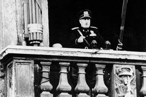
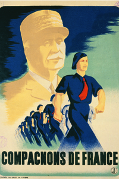

Lezione 19  La seconda guerrra mondiale
La seconda guerrra mondiale

-
250
230
-
235
200
-
360
325
-
320
225
-
410
425
DUNKUERQUE
Tra il 25 maggio e il 3 giugno il corpo di spedizione inglese in Francia, accerchiato dalla rapida avanzata tedesca, viene portato in salvo attraverso la Manica. Dalle spiagge di Dunkerque, sotto i colpi dell'aviazione nemica, vengono evacuati oltre trecentomila soldati.
Dall'Inghilterra arrivano navi e imbarcazioni di ogni tipo, militari e civili, compresi i battelli da diporto. Ancora oggi, quando qualcuno dimostra non comuni capacità di reagire alle avversità, gli inglesi dicono che ha lo "spirito di Dunkerque".LONDRA
Sconfitta la Francia, Hitler pensava che gli inglesi avrebbero cercato un accordo.
Per fiaccare il loro morale, ordina all'aviazione bombardamenti a tappeto sulle città, e in particolare su Londra. Ma i caccia inglesi, ben guidati da terra grazie ad una capillare rete di avvistamento e al radar, infliggono durissime perdite ai bombardieri.
La battaglia d'Inghilterra ha ufficialmente inizio il 10 luglio e si esaurisce nei primi mesi del 1941. Riferendosi all'eroismo dei suoi piloti, il primo ministro inglese Winston Churcilli dirà: "mai nel campo degli umani conflitti tanti dovettero così tanto a così pochi".
ROMA
Il 10 giugno, dal balcone di Palazzo Venezia a Roma, Benito Mussolini annuncia l'entrata in guerra dell'Italia a fianco dell'alleato germanico. Sa che il paese non è pronto, ma spera in una rapida vittoria: in quel momento la Francia è alle corde, gli inglesi si sono ritirati al di là della Manica, gli Stati Uniti e l'Unione Sovietica non partecipano al conflitto. I suoi calcoli si dimostreranno ben presto sbagliati.
VICHY
A Vichy, ridente cittadina turistica della Francia centrale, il 29 giugno viene insediato il governo collaborazionista (di cui qui vediamo un manifesto propagandistico firmato da Eric Castel) del maresciallo Pétain, che era stato un eroe della Grande guerra.
Pétain governerà la Francia non ufficialmente occupata dalle truppe tedesche fino all'agosto del 1944. Davanti all'avanzare degli Alleati sarà costretto a rifugiarsi in Germania. Catturato e condannato a morte per alto tradimento, a causa dell'età avanzata avrà la pena commutata nel carcere a vita. Internato a l'Ile de Yeu, morirà a 89 anni, nel 1951.GRECIA
Il regime nazionalista greco del primo ministro Metaxas era ideologicamente vicino al fascismo, ma aveva solidi legami con gli inglesi.
La campagna di Mussolini contro la Grecia ha inizio in ottobre, quando le truppe italiane entrano in territorio ellenico dalle basi in Albania. Ma i greci oppongono una strenua resistenza, e costringono gli italiani a una durissima guerra di posizione in montagna fino all'aprile del 1941, quando Jugoslavia e Grecia vengono invase dalle truppe tedesche.